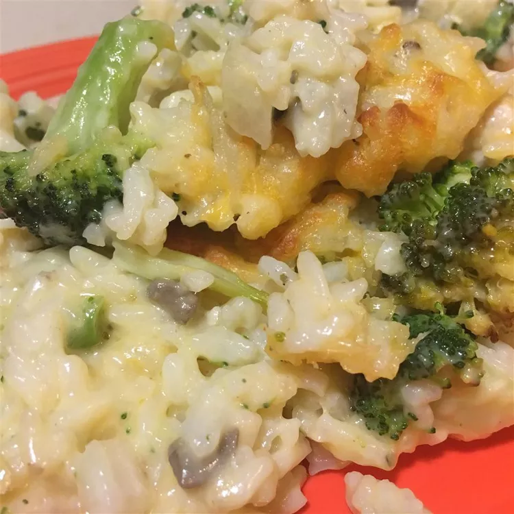

Cheesy Chicken Broccoli Rice Casserole

Baked rice with melting cheese flowing with delicious broccoli
This cheesy chicken broccoli rice casserole is very easy to make. You can leave out the onion but it does add
flavor.
It can be made ahead and frozen.
Ingredients
- 2 cups water
- 2 cups uncooked instant rice
- 2 (10 ounce) cans chunk chicken, drained
- 1 (16 ounce) package frozen chopped broccoli
- 1 pound processed cheese food, cubed
- 1 (10.75 ounce) can condensed cream of mushroom soup
- 1 (10.75 ounce) can condensed cream of chicken soup
- 1 cup milk
- ¼ cup butter, cubed
- 1 small white onion, chopped